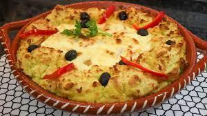

Bacalhau à Zé do Pipo

Description
It owes its name to José Valentim, nicknamed "Zé do Pipo", owner of a traditional restaurant in the city of Porto and author of the recipe.
It was created in the 1940s, and then proposed the first place in a competition called "the best meal at the best price".
Ingredients
- 2 cod fillets
- 800gr of potatoes
- 300ml of milk
- 2tbsp of butter
- 2 onions
- 3 garlic cloves
- 1 bay leaf
- 10 pitted black olives
- Q.S. Nutmeg
- Q.S. salt and pepper
- Mayonnaise
Steps
- Place 800g of peeled potatoes and cut into mall pieces in a pan with salt and cook arround 0 to 15 minutes
- Meanwhile, cook 2 cod fillets in a pan with 300ml of milk for 5 to 7 minutes
- When the potato is cooked, it's time to crush it until you get a puree
- Gradually add part of the milk you used to cook the cod, season with nutmeg, add 2 tablespoons of butter and beat until silky
- Then transfer the puree to a pastry bag and set aside
- Then, cut 2 onions into sices and place them in a frying pan with olive oil
- Also add 3 chopped garlic cloves, salt, 1 bay leaf, pepper, and the milk left over from cooking the cod
- Turn on the oven at 200ºC and place everything on a tray: the cod in the center, the onion and garlic on top, and the puree around it
- Then use anoter piping bag to cover everything with mayonnaise, and add pitted olives, before placing in the oven to brown for 15 minutes.
Enjoy!!